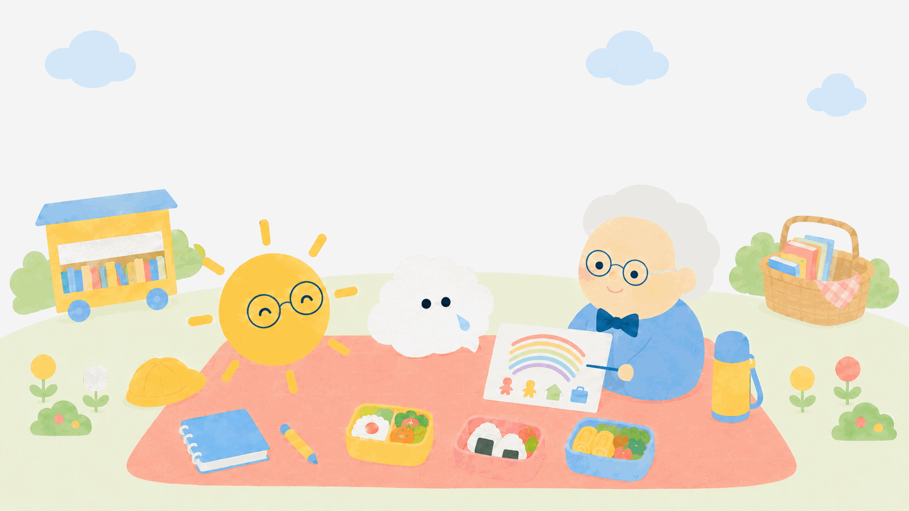

きょうのお客さま
ジェラットさんと
お弁当
決められないままじゃ、だめ？心は天気。晴れの日も、雨の日も。
その空をじっと見つめ、よりそう。
今日は、モヤンの「決められない」から始まります。
このお話は、学説と史実にもとづく創作の会話です。
試験で使う正式な表現は、各用語の「試験のことば」で確認してね。
おべんとうの時間 1
むかしのわたしは、こう言った。
🌫️ジェラットさんやあ、モヤン。……ふむ、その顔は「決められない顔」だね。だいじょうぶ、わたしは決められない話が大好物だ。

モヤン将来の夢を書く宿題があるんだけど、ぜんぜん決められないんだ。みんなはスラスラ書いてるのに……。
🌫️ジェラットさんむかしのわたしなら、こう言っただろう。「情報を集めて、選択肢をくらべて、順序立てて決めなさい」。予測システム・価値システム・決定システム——3つのシステムで、くりかえし決めていく。 という考え方だ。

サニー先生①どんな結果になりそうか予測して、②自分にとっての大事さで重みをつけて、③基準に照らして選ぶ。決定は一回きりでなく、探索的に決めては見直す——これが前期のジェラットさんだね。
モヤンそれ、正しそうだけど……ぼく、予測の時点でもう分からないよ。未来のことなんて。
気になる言葉を見つけたら、押してみよう。
おべんとうの時間 2
いまのわたしは、こう言う。
🌫️ジェラットさんふっふっふ。実はね、あとになって、わたし自身がきみと同じ結論にたどりついたんだ。「未来は、正確には予測できない」。だから考え方をあらためた。決めきれない気持ちを、無理に消さなくていい——それが だ。
モヤンえっ、自分の理論を、自分で書きかえたの！？
🌫️ジェラットさんそうとも。時代が変わったからね。大事なのは、目標や夢は持ちながら、新しい情報や偶然には心を開いておくこと。「決めているのに、変えられる」——このバランスが、変化の速い時代を歩くコツなんだ。
サニー先生霧の中を歩くとき、地図をにぎりしめたまま一歩も動けないより、方角だけ決めて、見えてきた景色で道を選び直すほうが進める——そんなイメージだね。
モヤン決められないのは、ダメなんじゃなくて……霧の中では自然なことなんだ！
気になる言葉を見つけたら、押してみよう。
おべんとうの時間 3
未来は、見つけるものじゃない。
モヤンじゃあ、宿題の「将来の夢」は、どう書けばいいかな。
🌫️ジェラットさん今いちばん心が動くものを、そのまま書けばいい。未来はどこかに隠れていて「見つける」ものではなく、歩きながら「創っていく」ものだからね。来年ちがう夢を書いたって、それは成長のしるしだ。
サニー先生前期の「ていねいに考えて決める」も、後期の「不確実さに心を開く」も、どちらも捨てなくていい。両方ポケットに入れておこうね。
モヤンうん！ 今の夢を書いて、書き直す自由もポケットに入れておくよ。
おかわりの時間
ジェラットさんの、おかわりばなし
ジェラットさんの理論は、前期と後期でがらりと変わったことで有名です。1960年代に「合理的に、順序立てて決める」モデルを発表して高く評価されたのに、およそ30年後、「未来が予測できない時代に、それだけでは足りない」と、自分の理論を自分でひっくり返しました。積極的不確実性を発表したとき、かつての自分の理論を一番よく知っているのは本人ですから、これほど説得力のある「書き直し」はありません。スーパーさんといい、ジェラットさんといい、大先生ほど自分の理論を更新することを恐れないようです。
参考: 理論家解説記事。発表年などの数値は一次資料で最終確認のうえ更新予定。お弁当のあとの遊び
ことばのタネを、ひろって帰ろう。
5問中、好きなところまでで大丈夫。分からなかった問題は、復習バスケットが預かります。
わたしの復習バスケット
雨のしずくも、持って帰ろう。
まだ問題は入っていません。
バスケットの中身は、この端末の中だけに保存されます。
きょうのお見送り
🌫️ジェラットさん霧の日も、歩けば景色は変わる。決められない話、またいつでも持っておいで。
つぎの先生と、ランチする →
お弁当のお話は、これからひとりずつ増えていくよ。